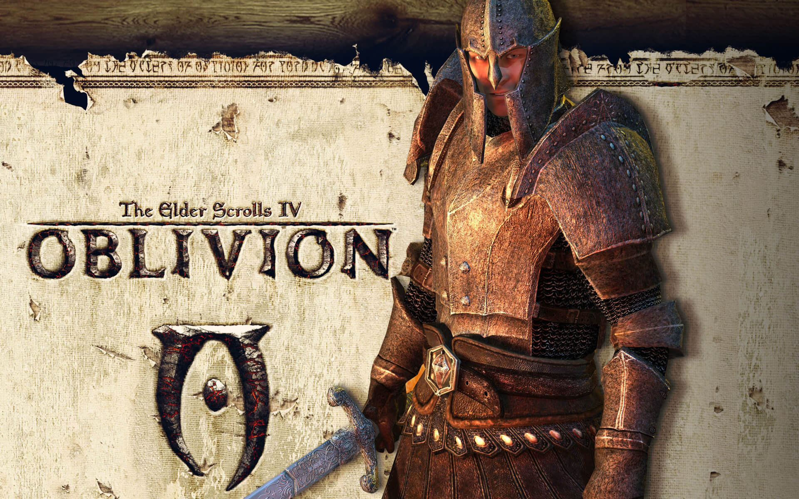

2025
Únete a la Expedición 33 en una carrera contra el tiempo para destruir a la Pintora antes de que borre a la humanidad. Un RPG por turnos con combates en tiempo real y un apartado artístico inspirado en la Belle Époque.


2024
El adorable robot de PlayStation regresa en una aventura de plataformas masiva que celebra los 30 años de historia de la marca. Recorre galaxias vibrantes, rescata a tus amigos y utiliza gadgets creativos en cada nivel.

2023
Reúne a tu grupo y regresa a los Reinos Olvidados en una historia de compañerismo, traición y sacrificio. El destino del mundo depende de tus decisiones en este RPG táctico basado en las reglas de Dungeons & Dragons.

2022
Álzate, Sinluz, y déjate guiar por la Gracia para blandir el poder del Círculo de Elden. Explora un vasto mundo abierto lleno de misterios, jefes imponentes y una mitología creada por Hidetaka Miyazaki y George R.R. Martin.

2021
Embárcate en el viaje más loco de tu vida en esta aventura de plataformas creada exclusivamente para cooperativo. Encarna a Cody y May, una pareja en crisis que debe superar desafíos disparatados para recuperar su forma humana.

2020
Cinco años después de su peligroso viaje por unos EE. UU. postpandémicos, Ellie busca justicia en una historia cruda y emocional. Una experiencia de acción y supervivencia que cuestiona los límites de la venganza.

2019
Explora el Japón de la era Sengoku como el "Lobo de un solo brazo". Enfréntate a enemigos formidables utilizando un brazo protésico y habilidades de ninja en un combate centrado en el desvío y la precisión.

2018
Kratos regresa, ahora como padre, en las gélidas tierras nórdicas. Junto a su hijo Atreus, deberá luchar contra dioses y monstruos mientras cumple una promesa personal en un viaje de redención y furia.

2017
Despierta tras un sueño de 100 años y explora un Hyrule en ruinas donde la libertad es total. Escala, cocina y lucha mientras recuperas tus recuerdos para derrotar a Ganon y salvar el reino.

2016
El mundo necesita héroes. Elige entre un elenco diverso de personajes con habilidades únicas y compite en frenéticas batallas por equipos en este shooter táctico que definió una era del juego competitivo.

2015
Encarna a Geralt de Rivia, un cazador de monstruos profesional, en busca de la Niña de la Profecía. Explora un mundo abierto maduro, lleno de ciudades comerciales, islas piratas y peligrosos bosques.

2014
Como el Inquisidor, tu deber es liderar a un grupo de héroes legendarios para cerrar una brecha en el cielo que libera demonios. Decide el destino de las naciones en este RPG de fantasía épica.

2013
Tres criminales muy diferentes cruzan sus caminos en Los Santos para realizar una serie de atracos épicos. Sobrevive en una ciudad donde nadie es de fiar en la experiencia definitiva de mundo abierto de Rockstar.

2012
En un mundo devastado por los no muertos, Lee Everett encuentra una segunda oportunidad protegiendo a una niña llamada Clementine. Cada decisión que tomes marcará el destino de los supervivientes que encuentres.

2011
El Imperio está al borde del colapso y los dragones han regresado. Como el último Sangre de Dragón, eres el único que puede dominar los Gritos y decidir el futuro de la provincia de Skyrim.

2010
Acompaña a John Marston en el ocaso del Salvaje Oeste. Obligado por el gobierno a cazar a sus antiguos camaradas de banda, Marston luchará por proteger a su familia en una historia de honor y sangre.

2009
Nathan Drake se ve arrastrado de nuevo al peligroso mundo de los ladrones y cazatesoros. Sigue la pista de los barcos perdidos de Marco Polo en una aventura cinematográfica que te llevará hasta el Himalaya.

2008
Niko Bellic llega a Liberty City buscando escapar de su pasado y vivir el "sueño americano". Pronto descubrirá que, en esta ciudad, la violencia y la corrupción son el único lenguaje que todos comprenden.

2007
Tras un accidente aéreo, descubres Rapture, una utopía submarina convertida en pesadilla. Modifica tu ADN con plásmidos y enfréntate a Big Daddies en este shooter filosófico donde nada es lo que parece.

2006
Tras el asesinato del Emperador, las puertas al reino de Oblivion se han abierto. Encuentra al heredero perdido al trono y detén la invasión demoníaca que amenaza con consumir el imperio de Tamriel.

2005
El agente Leon S. Kennedy es enviado a una remota aldea europea para rescatar a la hija del presidente. Enfréntate a horrores nunca antes vistos en este título que revolucionó la acción y el terror en tercera persona.

2004
CJ regresa a su barrio tras años de ausencia solo para ser incriminado en un homicidio. Recorre todo un estado, desde Los Santos hasta Las Venturas, para salvar a su familia y controlar las calles.

2003
Siente la intensidad del fútbol americano con el sistema Playmaker y el debut del modo Franquicia profundo. La simulación deportiva definitiva que puso a Michael Vick en la portada y en la historia.